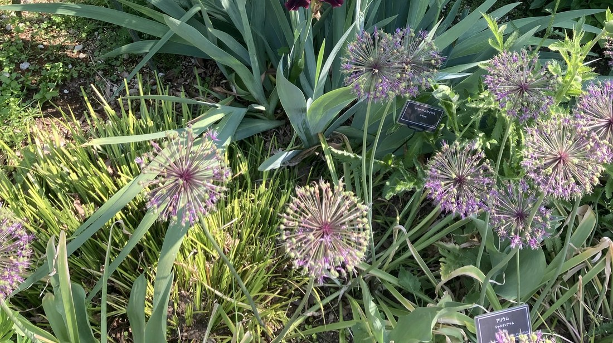

地図を読み込んでいるよ…
🔍 写真も地図も、押しているあいだ拡大して見られるよ（スマホは指を置いてすこし待ってね）。
🌍 の地図＝この子がもともと自生している場所を緑に。西アジア（イラン中部のヤズド地方を中心に、アフガニスタンなど）の乾いた山地。日本では観賞用の球根植物として育てられる。写真は足利フラワーパーク（りょうさんの写真）。
⭐西アジアが原産——イラン中部（ヤズド地方）を中心に、アフガニスタンなどの乾いた山地の球根。⚠地図は国ごと塗っているけど、もとはその一部の地域だよ。⚠日本は塗っていない——この子は観賞用に育てられている外来の球根植物で、日本はふるさとじゃない（足利フラワーパークで咲いていた）。⭐種小名 jesdianum は、原産地イランの地名ヤズド（Jesd）にちなむよ。
⚠ 地図は国（日本と中国だけ県・省）までしか塗れないから、ほんとうの分布より広く見えていることがあるよ。地図はだいたいの場所。正確なところは、上の文を見てね。
アリウム（ジェスディアナム）
Allium jesdianum
別名 · ハナネギ（花葱）／英名 ornamental onion／ 原産 · 西アジア（イラン）／ 見どころ · ⭐“葱坊主”の豪華版・星形の紫花
ヒガンバナ科 · Amaryllidaceae（ネギ属 Allium・ネギ亜科）── 084 キツネノカミソリと同じ科・キジカクシ目
燻太さんの見立て「手前には、アリウムだ。」──的中。台所のネギと同じネギ属だよ。
名前と学名の由来 ── Allium は「ネギ」・jesdianum は地名
- ⭐属名 Allium（アリウム）は、ラテン語で「ニンニク／ネギ」。ネギ属みんなをまとめて指す名前だよ。
- ⭐種小名 jesdianum は、原産地であるイラン中部の地名「ヤズド（Yazd／旧名 Jesd）」にちなむ＝「ヤズド地方の」。名前が、ふるさとを教えてくれているね。
- ⭐和名「アリウム」＝属名そのまま（園芸名）。別名「ハナネギ（花葱）」＝花を楽しむネギ、という意味。
この植物のこと
- ヒガンバナ科ネギ属の球根植物。⭐084 キツネノカミソリと同じヒガンバナ科——ただしキツネノカミソリは「ヒガンバナ亜科」、アリウムは「ネギ亜科」。同じ科の、ちがう顔だよ。
- ⭐⭐あの紫の球は「葱坊主（ねぎぼうず）」の豪華版：小さな星形の花が、何十個も球状に集まった散形花序。ネギの花（葱坊主）と同じつくりを、大きく色あざやかにしたものなんだ。
- ⭐ばら色〜紫の細い花被から、白い雄しべがつんと突き出る。だから、ひとつぶひとつぶがキラキラした星のように見える。
- ⭐⭐ネギ属＝食べる仲間がいっぱい：ネギ・タマネギ・ニンニク・ニラ・ラッキョウ・アサツキ、みんな同じネギ属。あの野菜たちも、花を咲かせればこの「球」になる。⭐観賞用アリウムは、“食べずに見て楽しむネギ”。葉や球をちぎると、ネギのにおいがする（硫黄の成分）。
- 西アジアの乾いた山地生まれ＝日なたと水はけを好む球根。
コラム ── 「葱坊主」の豪華版・ネギ属の一族
- 🧅葱坊主＝ネギの花。小さな花が球に集まる散形花序。⭐アリウムは、これを園芸的に大きく・色あざやかにしたもの。だから“花葱”。
- 🍲ネギ属は台所のスター勢ぞろい：ネギ・タマネギ・ニンニク・ニラ・ラッキョウ……全部このネギ属。刻むと涙が出るのも、あの香りも、硫黄の成分（アリシンなど）＝ネギ属みんなの合言葉。
- 🌿道ばたにも在来のネギ属＝ノビル（野蒜）（この子のおまけ）。小さな“葱坊主”とむかごをつけ、食べられる山菜。観賞用の大きなアリウムと、道ばたの小さなノビル——同じ属の、大きい子と小さい子だね。
同定について
- ⭐星形の小花が集まった球状の散形花序＋白く突き出る雄しべ＋ネギのにおい——ネギ属アリウムの目印。
- ⭐⭐足利フラワーパークのラベルに「アリウム／ジェスディアナム」——植物園のラベルは、同定の強い証拠。⭐燻太さんの見立て「アリウム」も的中だよ。
物語 ── 足利の春、紫の星
足利フラワーパーク、藤の季節。ジャーマンアイリスの足もとに、紫の星の球がころころと並んでいた。堅いネギの香りを持ちながら、花はこんなに華やか——台所の仲間が、庭でおめかしをしているみたいだね。123 ジャーマンアイリスとこの子は、りょうさんの同じ一枚の写真から、二人そろって図鑑にやってきたよ。ありがとう、りょうさん。
参考：Wikipedia「Allium jesdianum」（ヒガンバナ科ネギ属・イラン〜アフガニスタン原産／約75cm・球状の散形花序／ばら紫の花に白い雄しべが突き出る・観賞用）／Pacific Bulb Society「Allium jesdianum」（イラン原産の球根アリウム・大きな球状の花序）